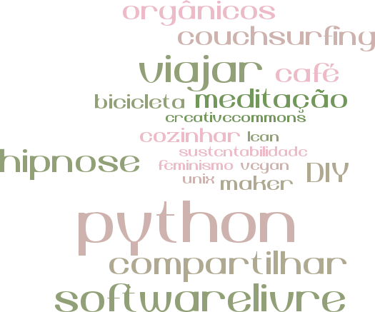
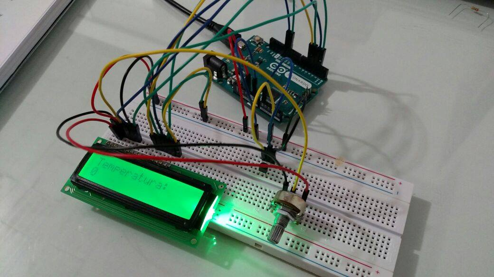

Arduino
(para fazedores)
Turicas aka Álvaro Justen
25 de junho de 2016
Slides disponíveis em:
bit.ly/arduino-fln
Turicas, prazer! =)
Sigam-me os bons:
{twitter,
github,
youtube,
slideshare,
instagram}
/turicas
alvaro@CursoDeArduino.com.br
turicas.info
Quem sou eu?

(não é só Arduino...)


arduino.cc
Owner's Manifesto
If you can't open it, you don't own it.
Colaboração versus Competição
Software Livre
Hardware Livre
Usuários Livres
Hardware
Arduino Uno

Arduino Leonardo

Brasuíno (da Holoscópio)

BlackBoard (da RoboCore)
Garagino (do Lab de Garagem)

Arduino Lilypad

Arduino Nano

Arduino Pro Mini

Arduino Due

Arduino Yún

Intel Edson
(Arduino Certified)
Módulos e Shields

Bluetooth Shield

Ethernet Shield
Módulo Relé
{kind=link}
Talk is cheap, show me the code!

Faça-você-mesmo!

youtu.be/eJg3yuAAawA
Arduino com LCD
fb.com/cursodearduino
Drawing Machine

youtu.be/eJg3yuAAawA
RepRap: Impressora 3D

vimeo.com/5202148
CNC com Arduino

youtu.be/pIUgYdAds30

bit.ly/arduino-bh
CUPOM DE DESCONTO: FABLAB